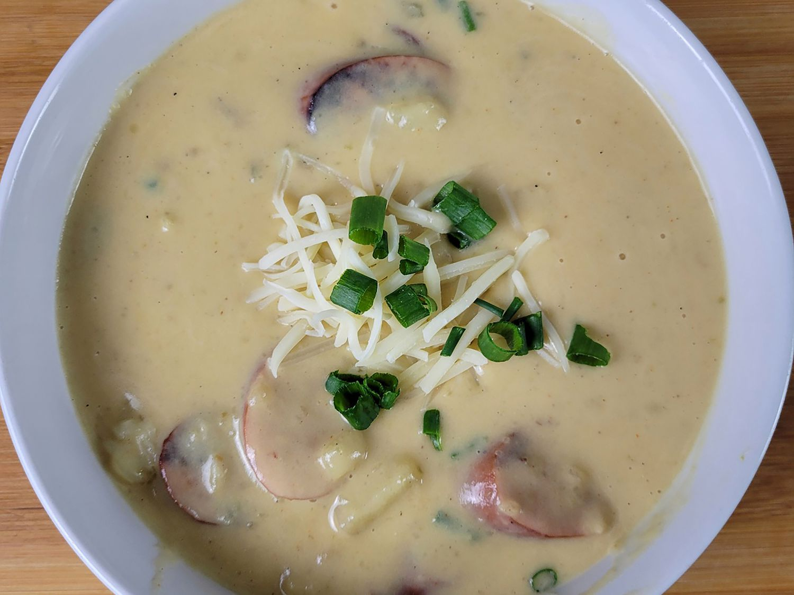

Soup of Immortality

Description
Also called Creamy Cajun Potato Soup. This creamy Cajun potato soup is hearty, full of goodness and Cajun flavor. Andouille sausage, the "holy trinity" of onion, bell pepper, and celery, and Cajun seasoning bring it all together.
Ingredients
- 5 Yukon gold potatoes, peeled and cut into chunks
- 2 tablespoons butter
- 1 tablespoon olive oil
- 1 yellow onion, chopped
- 2 stalks celery, chopped
- 1 green bell pepper, chopped
- 2 cloves garlic, chopped
- 1 pound andouille smoked sausage, cut into round slices
- 4 cups vegetable broth or chicken broth
- 1 cup heavy cream
- 1 teaspoon Cajun seasoning, or as needed
- 1/4 cup grated Parmesan cheese
Steps
- Place potatoes in a large microwave-safe bowl with a few tablespoons water, and cook on High, stopping occasionally to stir potatoes, until nearly tender, 5 to 8 minutes.
- Meanwhile, heat butter and olive oil in a large stock pot over medium heat. Add onion, celery, bell pepper, and garlic, and cook and stir until onion begins to turn translucent, about 5 minutes. Stir in andouille, and cook for about 5 minutes more.
- Pour in vegetable broth; bring to a simmer, add potatoes, and cook until potatoes are fork-tender, about 15 minutes.
- Stir in cream; season to taste with Cajun seasoning, and cook just until heated through. Serve hot in bowls; sprinkle each bowl with Parmesan cheese.